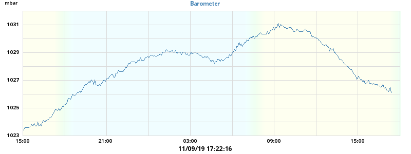

Barometer
24h barometer

Today's min: 1024.6 mbar at 14:01:37
Today's max: 1028.4 mbar at 00:55:09
7-day barometer
This week's min: 1024.6 mbar at 14:01:37 (Sunday)
This week's max: 1028.4 mbar at 00:55:09 (Sunday)
weewx v 3.0.1